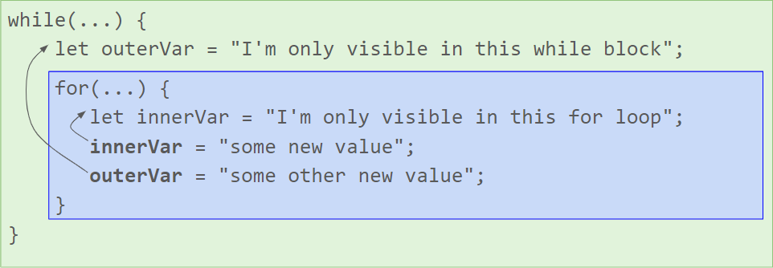
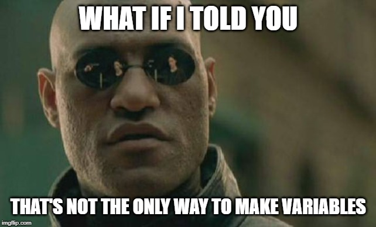
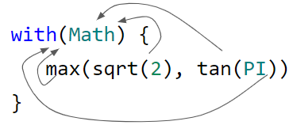

Anything is Possible!
Unlocking the Nightmarish Power of JavaScript via with and Proxy
Andrew Sillers
Click/tap to continue; right-click or long-press to go back
License: CC BY-SA (presentation) / X11 (code)
See end slide for details.
What's a variable?
- A variable is, in language terms, a structure with at least two parts:
- A name ("variable identifier")
- A value
- Also, type and memory location, but JavaScript variables don't have those
- JS values have types; JS variables do not
- Today, we're going to wreck JavaScript's ability to use variables, and then bring it back "better" than "ever"!
A glimpse into our strange, variable-free future
JavaScript Objects
- Objects have properties, each made of a key and a value
- Property access done equivalently by "dot notation" or "bracket notation"
- If a property doesn't exist, it has the value
undefined
Getter Properties
- Sometimes properties don't have a value, but use a getter function to compute their value at access-time
- Property access is exactly the same:
- But this now causes transparent function execution
- The code that asks for
alice.age can't tell the difference between a stored value and a getter-generated value
- Infinite possible values for the property
age
Infinite Properties
- We can have infinite possible values for a property, but...
- What if we wanted INFINITE properties?
- How could you even populate infinite propeties with meaningful values?
- That could take a long time to do manually
- Maybe some kind of getter for all properties, somehow...?
Proxy: an object with superpowers
- A Proxy is a special type of object that allows redefinition of normal JavaScript engine-level behaviors on an object
- It's called a "proxy" because it wraps around some inner object
- Proxies let you define one master getter function for all properties
- Runs all property access through a "trap" function
- A traditional getter lets a single property dynamically compute its value
- Proxy's
get allows arbitrary mapping from property names to values
Interesting Proxy: debug-logging all property access
Interesting Proxy: properties can't start with "s"
Interesting Proxy: eval all the things
The philosophy of a Proxy
- A Proxy object may have infinite meaningful properties
- More strongly, all properties on a Proxy may be meaningful!
- From a certain point of view, all possible properties exist at once
- Their values simply aren't computed until asked for: a kind of lazy evaluation in JavaScript!
Now for something completely different
(But remember that Proxy stuff)
JavaScript scope
- This block has two variables inside of it. They are not visible outside the block.
- Each block (like
while/for) in JS has a scope
- What's a scope? A scope holds some set of variables (a name + value)
- When you define variables via
let (or var or const), you add them to the scope
Scope chain
- Scopes are nested in a scope chain
- From inside the
for, we "reach up" the scope chain to the outer scope to find outerVar and justOne
- This reach-up lookup happens any time we use a variable identifier in any way in our code

Let's review
- A variable is data structure with a name and a value.
- A scope is a set of variables, plus a parent scope
- This parent-child relationship makes up the scope chain.
- Blocks have scopes. (Functions do too. Not important right now.)
- We create a variable in a scope via variable definitions like
let foo
- When our code uses any variable identifier, the JS engine tries to find some a matching-named variable somewhere in the scope chain
Let's review
- A variable is data structure with a name and a value.
- A scope is a set of variables, plus a parent scope
- This parent-child relationship makes up the scope chain.
- Blocks have scopes. (Functions do too. Not important right now.)
- We create a variable in a scope via variable definitions like
let foo
- When our code uses any variable identifier, the JS engine tries to find some a matching-named variable somewhere in the scope chain

Defining variables with style
- The
with statement is so awful, it's disallowed in JS strict mode
- A
with block has an immediate outer variable scope defined by the properties of an object
- This introduces variables not defined by
let or var
- In the second code snippet here, there are the variable identifiers (
max, sqrt, etc.) that we never defined anywhere
- The reach-up variable lookup first looks at the properties of the
Math object to find variables with those names

So that means...
- Any variable identifier can potentially be resolved by object-property access
- Wait, don't I know about an object with infinite, lazily-evaluated properties…?
- Oh yeah, a Proxy
- I was paying attention earlier
So THAT means...
- ALL VARIABLES EXIST AT ONCE
- Welcome to a world where all variable identifiers resolve to the identity function (i.e., a function that returns its input)
- This is because all variable lookups find a result in the Proxy, which claims it has any variable, and always produces an identity function
Applications: binary literal
- JavaScript already has hex literals like
0x1A0F
- We could make a binary literal of the form
b[01]+
Applications: PHP-like bare strings
- PHP has an "interesting" "feature" where you ahve have "quoteless" bare-strings
- i.e., variable identifiers that would resolve to
undefined instead resolve to a string with the identifier's content
- I thought JavaScript had a monopoly on all the worst idiosyncrasies! We must implement this behavior in JS as well
Applications: variables with strict types!!
The End
Click onward for licensing information
Acknowledgement
Special hat-tip to Erling Ellingsen's coding-game
return true to win (
https://alf.nu/ReturnTrue) which was the only thing crazy enough to make me think the ideas in the talk
Licenses
Presentation: Structure, Text, Code, Images
Iframe-Embedded REPL
The Too-Simple REPL is licensed under the MIT/X11 License. (See the "About" button or source code for more information.) It is extremely lousy, easy to break, and should NOT be used for any kind of production environment. I'm already having nightmares about someone doing that. Don't.